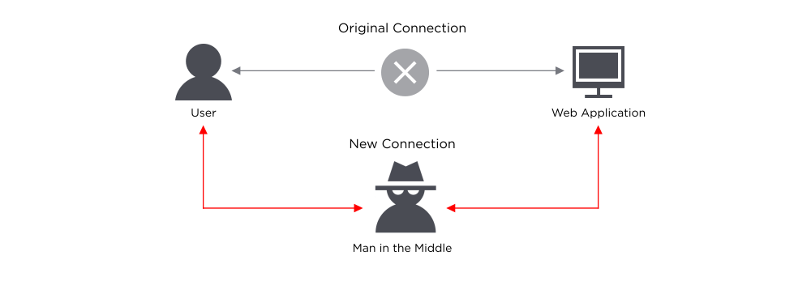
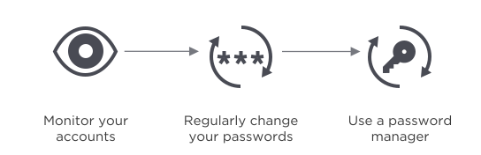
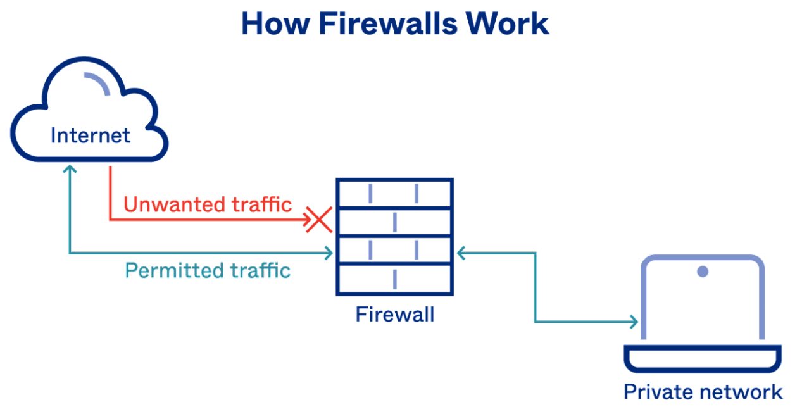

-UNRIVALLEDKING♚
Malware is a shortened form of malicious software. It is an umbrella term
used to refer to a variety of forms of hostile or intrusive software
including Ransome wares, Computer Viruses, Worms, Trojan Horses, Spywares,
Adwares, Scarewares, etc. These are deployed with malicious intent. It can
take the form of executable code, scripts, active content, and other
software. These malicious programs can perform a variety of functions,
including stealing, encrypting or deleting sensitive data, altering or
hijacking core computing functions and monitoring user’s computer activity
without their permission.
Malware is typically used :
★ To steal information that can be readily monetized, Such as login credentials, credit card and bank account numbers
★ And intellectual property such as computer software, financial algorithms and trade secrets.
★ To ransom money in Bitcoin, for example, Wannacry Ransomware.
★ Spy on computer users for an extended period without their knowledge, for example, Reign Malware.
★ It may be designed to cause harm, often as sabotage for example, Stuxnet
★ Extort payment for example, Cryptolocker.
Ransomware is software that uses encryption to disable a target’s access to its data until a ransom is paid. The victim organization is rendered partially or totally unable to operate until it pays, but there is no guarantee that payment will result in the necessary decryption key or that the decryption key provided will function properly.
Spyware collects information about user’s activities without their knowledge or consent. This can include passwords, pins, payment information and unstructured messages.
Adware tracks a user’s surfing activity to determine which ads to serve them. Although adware is similar to spyware, it doesn’t install any software on a user’s computer, nor does it capture keystroke. The danger in adware is the erosion of a user’s privacy - the data captured with data captured, overtly or covertly, about the user’s activity elsewhere on the internet and used to create a profile of that person which includes who their friends are, what they’ve purchased, where they’ve travelled, and more. That information can be shared or sold to advertisers without the user’s consent.
A Trojan disguises itself as desirable code or software. Once downloaded by unsuspecting users, the Trojan can take control of victims’ systems for malicious purposes. Trojans may hide in games, apps, even software patches, or they may be embedded in attachments included in phishing emails.
Worms target vulnerabilities in operating systems to install themselves into networks. They may gain access in several ways: through backdoors built into software, through unintentional software vulnerabilities, or through flash drives. Once in place, worms can be used by malicious actors to launch DDoS attacks, steal sensitive data, or conduct ransomware attacks.
A virus is a piece of code that inserts itself into an application and executes when the app runs. Once inside a network, a virus may be used to steal sensitive data, launch DDoS attacks or conduct ransomware attacks
Viruses V/S Trojans
A virus cannot execute or reproduce unless the app it has infected is running. This dependence on a host application makes viruses different from trojans, which require users to download them, and worms, which do not use applications to execute. Many instances of malware fit into multiple categories: for instance, Stuxnet is worm, a virus and a rootkit.
A rootkit is a software that gives malicious actors remote control of a victim’s computer with full administrative privileges. Rootkits can be injected into applications, kernels, hypervisors, or firmware. They spread through phishing, malicious downloads, and compromised shared drives. Rootkits can also be used to conceal other malware, such as keyloggers.
A keylogger is a type of spyware that monitors user activity. Keyloggers have legitimate uses; businesses can use them to monitor employee activity and families may use them to keep track of children’s online behaviors. However, when installed for malicious purposes, Keyloggers can be used to steal password data, banking information and other sensitive information. Keyloggers can be inserted into a system through phishing, social engineering or malicious download.
A bot is a software application that performs automated tasks on command. They’re used for legitimate purposes, such as indexing search engines, but when used for malicious purposes, they take the form of self-propagating malware that can connect back to a central server. Usually, bots are used in large numbers to create a botnet, (BOTNET stands for roBOT NETwork) which is a network of bots used to launch broad remotely-controlled floods of attacks, such as DDoS attacks.
Scareware is a malware tactic that manipulates users into believing they need to download or buy malicious, sometimes useless software. Most often initiated using a pop-up ad. Scareware uses social engineering to take advantage of a user’s fear. coaxing them into installing fake anti-virus software. Scareware goals can vary from selling useless,fake tools to the installation of malware and ransomware.
Backdoors are much the same as Trojans or Worms, except that they open a “backdoor” on a computer, providing a network connection for hackers or other Malware to enter or for viruses or SPAM to be sent.
Spamming is a method of flooding the internet with copies of messages. Most spams are commercial advertisements which are sent as an unwanted email to users.
A Logic Bomb is a piece of often-malicious code that is intentionally inserted into software. It is activated upon the host network only when certain conditions are met. This makes their presence undetected until it executes their function, which can range from inflicting harm through file deletion to self-propagation to the unusual. Logic Bombs can also take effect on the target system upon a certain date - e.g. 20.06.2022 - and these are termed as Time Bombs. Damage caused by logic bombs vary from changing bytes of data to making hard drives unreadable.
Fileless Malware doesn’t install anything initially, instead, it makes changes to files that are native to the operating system, such as PowerShell or WMI. Because the operating system recognizes the edited files as legitimate, a fileless attack is not caught by antivirus software - and because these attacks are stealthy, they are up to ten times more successful than traditional malware attacks.
Malvertising is the use of legitimate ads or ad networks to covertly deliver malware to unsuspecting users’ computers. For example, a cybercriminal might pay to place an ad on a legitimate website. When a user clicks on the ad, code in the ad either redirects them to a malicious website or installs malware on their computer. In some cases, the malware embedded in an ad might execute automatically without any action from the user, a technique referred to as a “drive-by download”.
Spoofing is a type of attack on a computer device in which the attacker tries to steal the identity of the legitimate user and act as another person. This kind of attack is done to breach the security of the system or to steal the information of the users. (Tempmail)
A denial-of-service (DoS) attack floods a server with traffic, making a website or resource unavailable. A distributed denial-of-service (DDoS) attack is a DoS attack that uses multiple computers or machines to flood a targeted resource. Both types of attacks overload a server or web application with the goal of interrupting services. As the server is flooded with more Transmission Control Protocol/User Datagram Protocol (TCP/UDP)packets than it can process, it may crash, the data may become corrupted, and resources may be misdirected or even exhausted to the point of the system.
The principle difference between a DoS and a DDoS is that the former is a system-on-system attack, while the latter involves several systems attacking a single system. There are other differences, however, involving either their nature or detection, including
☆ Ease of detection/mitigation: since DoS comes from a single location, it is easier to detect its origin and sever the connection. In fact, a proficient firewall can do this. On the other hand, a DDoS attack comes from multiple remote remote locations, disguising its origin.
☆ Speed of attack: Because a DDoS attack comes from multiple locations, it can be deployed much faster than a DoS attack that originates from a single location. The increased speed of attack makes detecting it more difficult, meaning increased damage or even a catastrophic outcome.
☆ Traffic volume: A DDoS attack employs multiple remote machines (zombies or bots), which means that it can send much larger amounts of traffic from various locations simultaneously, overloading a server rapidly in a manner that eludes detection.
☆ Manner of execution: A DDoS attack coordinates multiple hosts infected with malware (bots), creating a botnet managed by a command-and-control (C&C) server. In contrast, a DoS attack typically uses a script or a tool to carry out the attack from a single machine.
☆ Tracing of source(s): The use of a botnet in a DDoS attack means that tracing the actual origin is much more complicated than tracing the origin of a DoS attack.
DoS and DDoS attacks can take many forms and be used for various means. It can be to make a company lose business, to cripple a competitor, to distract from other attacks, or simply to cause trouble or make a statement. The following are some common forms taken by such attacks
★ Teardrop Attack
A teardrop attack is a DoS attack that sends countless Internet Protocol (IP) data fragments to a network. When the network tries to recompile the fragments into their original packets, it is unable to.
For example, the attacker may take very large data packets and break them down into multiple fragments for the targeted system, which is then unable to reassemble the fragments into their original packets.★ Flooding Attack
A flooding attack is a DoS attack that sends multiple connection requests to a server but then doesn’t respond to complete the handshake.
For example, the attacker may send various requests to connect as a client, but when the server tries to communicate back to verify the connection, the attacker refuses to respond. After repeating the process countless times, the server becomes so inundated with pending requests that real clients cannot connect, and the server becomes “busy” or even crashes.★ IP Fragmentation Attack
An IP fragmentation attack is a type of DoS attack that delivers altered network packets that the receiving network cannot reassemble. The network becomes bogged down with bulky unassembled packets, using up all its resources.
★ Volumetric Attack
A volumetric attack is a type of DDoS attack used to target bandwidth resources. For example, the attacker uses a botnet to send a high volume of request packets to a network, overwhelming its bandwidth with Internet Control Message Protocol (ICMP) echo requests. This causes services to slow down or even cease entirely.
★ Protocol Attack
A protocol attack is a type of DDoS attack that exploits weaknesses in Layers 3 and 4 of the OSI model (Open System Interconnection model). For example, the attacker may exploit the TCP (Transmission Connection Protocol) connection sequence, sending requests but either not answering as expected or responding with another request using a spoofed source IP address. Unanswered requests use up the resources of the network until it becomes unavailable.
★ Application-based Attack
An application-based attack is a type of DDoS attack that targets Layer 7 of the OSI model. An example is a Slowloris attack, in which the attacker sends partial Hypertext Transfer Protocol (HTTP) requests but doesn’t complete them. HTTP headers are periodically sent for each request, resulting in the network resources becoming tied up.
The attacker continues the onslaught until no new connections can be made by the server. This type of attack is very difficult to detect because rather than sending corrupted packets, it sends partial ones, and it uses little to no bandwidth.
These following are some high-level best practises for DoS and DDoS protection:
★ Monitor your network continually: This is beneficial to identifying normal traffic patterns and critical to early detection and mitigation.
★ Run tests to simulate DoS attacks: This will help assess risk, expose vulnerabilities, and train employees in cybersecurity.
★ Create a protection plan: Create checklists, form a response team, define response parameters, and deploy protection.
★ Identify critical systems and normal traffic patterns: The former helps in planning protection, and latter helps in early detection of threats.
★ Provision extra bandwidth: It may not stop the attack, but it will help the network deal with spikes in traffic and lessen the impact of any attack.
Password attacks are one of the most common forms of corporate and personal data breach. A password attack is simply when a hacker tries to steal your password. In 2020, 81% of data breaches were due to compromised credentials. Because Passwords can only contain so many letters and numbers, passwords are becoming less safe. Hackers know that many passwords are poorly designed, so password attacks will remain a method of attacks as long as passwords are being used.
1. phishing
Phishing is when a hacker posing as a trustworthy party sends you a fraudulent email or message, hoping you will reveal your personal information voluntarily. Sometimes they lead you to fake “reset your password” screens; other times, the links install malicious code on your device. Here are a few examples of phishing:
★ Regular phishing: You get an email from what looks like goodwebsite.com (it can also appear as facebook, instagram or any other popular website)asking you to reset your password, but you didn’t read closely and it’s actually goodwobsite.com. You “reset your password” and the hacker steals your credentials.
★ Spear phishing: A hacker targets you specifically with an email that appears to be from a friend, colleague, or associate. It has a brief, generic blurb (“Check out the invoice I attached and let me know if it makes sense.”) and hopes you click on the malicious attachment.
★ Smishing and Vishing: You receive a text message (SMS phishing, or smishing) or phone call (voice phishing or vishing) from a hacker who informs you that your account has been frozen or that fraud has been detected. You enter your account information and the hacker steals it.
★ Whaling: You or your organization receive an email purportedly from a senior figure in your company. You don’t do your homework on the email’s veracity and send sensitive information to a hacker.
2. Man-in-the-middle attack
Man-in-the-middle (MitM) attacks are when a hacker or compromised system sits in between two uncompromised people or systems and deciphers the information they’re passing to each other, including passwords. If Alice and Bob are passing notes in class, but Jeremy has to relay those notes, Jeremy has the opportunity to be the man in the middle.
To help prevent man-in-the-middle attacks:
★ Enable encryption on your router. If your modem and router can be accessed by anyone off the street, they can use “sniffer” technology to see the information that is passed through it.
★ Use strong credentials and two-factor authentication. Many router credentials are never changed from the default username and password. If a hacker gets access to your router administration, they can redirect all your traffic to their hacked servers.
★ Use a VPN. A secure virtual private network (VPN) will help prevent man-in-the-middle attacks by ensuring that all the servers you send data to are trusted.
3. Brute Force Attack
If a password is equivalent to using a key to open a door, a brute force attack is using a battering ram. A hacker can try 2.18 trillion password/username combinations in 22 seconds, and if your password is simple, your account could be in the crosshairs.
To help prevent brute force attacks:
★ Use a complex password. The difference between an all-lowercase, all-alphabetic, six-digit password and a mixed-character, ten-digit password is enormous. As your password’s complexity increases, the chance of a successful brute force attack decreases.
★ Enable and configure remote access. Ask your IT department if your company uses remote access management.
★ Require multi-factor authentication. If multi-factor authentication (MFA)is enabled on your account, a potential hacker can only send a request to your second factor for access to your account. Hackers likely won't have access to your mobile device or thumbprint, which means they’ll be locked out of your account.
4. Dictionary attack
A type of brute force attack, dictionary attacks rely on our habit of picking “basic” words as our password, the most common of which hackers have collated into “cracking dictionaries.” More sophisticated dictionary attacks incorporate words that are personally important to you, like a birthplace, child’s name, or pet’s name.
To help prevent a dictionary attack:
★ Never use a dictionary word as a password. If you’ve read it in a book, it should never be part of your password. If you must use a password instead of an access management tool, consider using a password management system.
★ Never use a dictionary word as a password. If you’ve read it in a book, it should never be part of your password. If you must use a password instead of an access management tool, consider using a password management system.
★ Consider investing in a password manager. Password managers automatically generate complex passwords that help prevent dictionary attacks.
5. Credential Stuffing
If you’ve suffered a hack in the past, you know that your old passwords were likely leaked into a disreputable website. Credential stuffing takes advantage of accounts that never had their passwords changed after an account break-in. Hackers will try various combinations of former usernames and passwords, hoping the victim never changed them.
To help prevent credential stuffing
★ Monitor your accounts. There are paid services that will monitor your online identities, but you can also use free services like haveibeenpwned.com to check whether your email address is connected to any recent leaks.
★ Regularly change your passwords. The longer one's password goes unchanged, the more likely it is that a hacker will find a way to crack it.
★ Use a password Manager. Like a dictionary attack, many credential stuffing attacks can be avoided by having a strong and secure password. A password manager helps maintain those.
6. Keystroke/Keyloggers
Keyloggers are a type of malicious software designed to track every keystroke and report it back to a hacker. Typically, a user will download the software believing it too be legitimate, only for it to install a keylogger without notice.
To protect yourself from Keyloggers
★ Check your physical hardware. If someone has access to your workstation, they can install a hardware keylogger to collect information about your keystrokes. Regularly inspect your computer and the surrounding area to make sure you know each piece of hardware.
★ Run a virus scan. Use a reputable antivirus software to scan your computer on a regular basis. Antivirus companies keep their records of the most common malware keylogger and will flag them as dangerous.
The best way to fix a password attack is to avoid one in the first place. Ask your IT professional about proactively investing in a common security policy that includes:
★ Multi-Factor authentication. Using a physical token (like a yubikey) or a personal device(like a mobile phone) to authenticate users ensures that passwords are not the sole gate to access.
★ Remote access. Using a smart remote access platform.
★ Biometrics. A malicious actor will find it very difficult to replicate your fingerprint or facial shape. Enabling biometric authentication turns your password into only one several points of trust that a hacker needs to overcome.
A firewall is a network security device that monitors incoming and outgoing network traffic and decides whether to allow or block specific traffic based on a defined set of security rules.
Firewalls have been a first line of defense in network security for over 25 years. They establish a barrier between secured and controlled internal networks that can be trusted and untrusted outside networks, such as the Internet. A Firewall can be hardware, software, or both.

Types of Firewall
- Application Layer 7: Sort traffic based on its contents and its destination. Block any traffic based on rules you define
- Connection tracking: Examine the conversation between two sources using knowledge of the IP addresses they’ve used before.
- Endpoint: Examine data packets against rules you’ve crafted
- Network address translation (NAT): a NAT can hide individual IP addresses, blocking scammers from understanding how your server works. This solution is technically not a firewall, but behaves like one.
- Packet filter: Rules dictate what packets must be examined and what should happen if a problem is found.
- Web application proxy: Rules dictates how traffic works for one specific application.
- Stateful inspection: All activity within an open connection is monitored, and filtering rules dictate what should happen.
- Unified threat management: All activity in open connection is monitored, and the system also looks for evidence of virus attacks.
- Virtual: Traffic bouncing between physical and virtual networks is monitored.